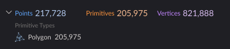
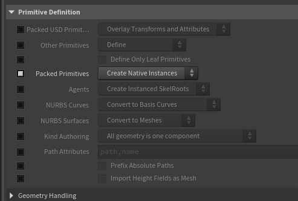
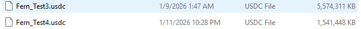

← 部落格 × Special Project | PART1
首先，我用 Yichen 的蕨類模型測試 VAT 流程。不過由於面數很高（205,975 個多邊形）、動畫又很長（240 格），貼圖輸出經常失敗。
所以我決定降低面數，並嘗試把動畫分段輸出：先輸出第 1–100 格，再輸出第 101–240 格。結果遇到問題，動畫看起來會抖動，後來我找到一個非常有用的 VAT 除錯方法。


第 1 週
VAT 與 USD 流程測試
1 月 9 日
VAT：
首先，我用 Yichen 的蕨類模型測試 VAT 流程。不過由於面數很高（205,975 個多邊形）、動畫又很長（240 格），貼圖輸出經常失敗。
我在 Houdini 社群找到一位藝術家提出的公式，用來判斷最適合算圖的 primitive 數量與影格數。
VAT 每種貼圖尺寸的點數上限？影格範圍上限？
結論是：把影格數乘以點數再除以貼圖尺寸 (frame_count*point_count)/texture_size，只要結果低於 9000 似乎就能順利完成。不過這是我靠反覆試錯摸索出來的。
連結：https://www.sidefx.com/forum/topic/85129/?page=1#post-368221

所以我決定降低面數，並嘗試把動畫分段輸出：先輸出第 1–100 格，再輸出第 101–240 格。結果遇到問題，動畫看起來會抖動，後來我找到一個非常有用的 VAT 除錯方法。
連結：https://www.sidefx.com/forum/topic/81422/#post-350761
原因是建置設定改變了。
還需要找出動畫閃爍的原因。
USD：
USD 流程方面，我嘗試在 Houdini 中建立 USD instancing，發現使用 Packed Primitives 能大幅降低記憶體用量。這裡我測試了 15 株蕨類。


大小比較
之前
之後
視覺比較
-
在 Houdini 中嘗試 USD instancing
-
在 Unreal 中嘗試 USD instancing
-
在 Houdini 和 Unreal 中嘗試 VAT instancing